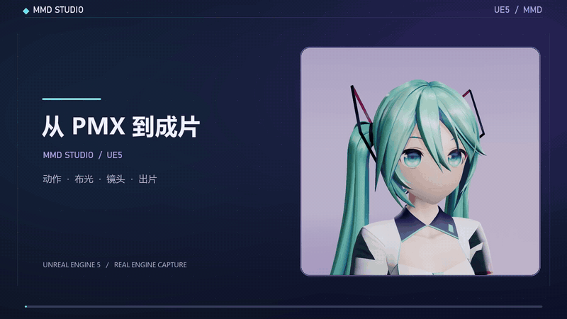

Demo
The original walkthrough is on Bilibili; the panel is Chinese-only today, and the illustrated guide labels every control in English.
If the player does not load, open the demo on Bilibili (BV1M2RXBPExk).
What it looks like
From a loaded character to a finished MP4: pick a motion, change the studio, frame the shot, press produce. Click the clip for the full workflow video.


Quick start
The full illustrated steps live in the repository, with real panel screenshots and the button location for each step:
1. Install
Unpack the release and place Ue5MMDTools/ in your project's Plugins/ folder, enable the plugin and restart the editor. You can also run MMD.OpenPanel from the editor console.
YourProject/
Plugins/
Ue5MMDTools/2. Import a character and try motions
Open the studio from Window → Ue5MMDTools, press 导入 PMX 模型 (Import PMX Model) and keep the PMX next to its textures. After the first import, 加载已有角色 (Load Existing Character) is enough. Pick a built-in motion, then turn on 实时物理 (real-time physics) at the bottom of the panel to inspect hair and cloth.
3. Lighting and camera
On the 场景 (Stage) page each studio card swaps the set together with its lighting. Above the viewport choose full, half, face, side or back. The 风格 (Style) page previews materials and can restore the originals at any time.
4. Produce the MP4
Confirm motion, stage, style and a perspective camera, then press 按当前预览制作 (produce from current preview). The result lands in Saved/MMDProduction/. Needs Windows D3D12 SM6 and ffmpeg plus ffprobe on PATH.
What the plugin does
PMX import
- Parses PMX vertices, indices, normals, UVs, materials and bones.
- Builds native
SkeletalMeshandSkeletonassets. - Creates base MMD materials and material instances.
- Keeps the PMX model data for later reimports and tooling.
Morphs and expressions
- PMX vertex morphs become UE
MorphTargetassets. - Vertex mapping is corrected so expressions do not distort.
- VMD expressions become float curves on the animation.
- Group and flip morphs are expanded, so blinks and mouth shapes work.
VMD motion
- Parses VMD bone and morph keyframes.
- Bone tracks are written into an
AnimSequence. - Expression tracks become morph curves.
- Handles MMD-to-UE axis conversion and IK / append bone baking.
Actor, animation blueprint and IK
- Creates the MMD Actor automatically.
- Generates an
AnimBlueprintfor the imported character. - Ships an MMD skeletal control animation node.
- Builds IK Rig and IK Retargeter assets.
Physics
- Reads PMX rigid bodies and joints.
- Runs an MMD-style Bullet solver.
- Simulates hair and cloth while playing; freezing a pose keeps physics running.
- Advances physics per frame during production and bakes into Sequencer.
Studios, lighting and delivery
- Eight studio presets; switching a stage swaps its set and matching lights.
- Style presets preview materials and restore the originals in one click.
- Renders the current preview to a 30 fps MP4 with frames and logs.
- Command line:
import-pmx,import-vmd,render, each returning JSON.
Current limits
- Material morphs are not fully driving UE material parameters yet.
- Bone and UV morphs are not complete animation channels.
- Unusual skeletons, IK setups and morph combinations may need per-model adaptation.
- The panel is Chinese-only; English and Japanese UI are planned.
Pipeline
MMD data becomes native UE assets, and lighting, camera and delivery happen in the same panel.
PMX model
-> SkeletalMesh
-> Skeleton
-> MorphTarget
-> Materials
-> MMD Actor
VMD motion
-> AnimSequence bone tracks
-> AnimSequence morph curves
MMD Studio
-> built-in motions / your own VMD
-> Bullet physics (freeze a pose and keep simulating)
-> studio and lighting presets
-> full / half / face / side / back cameras
Delivery
-> 30 fps MP4 (Saved/MMDProduction/)
-> frames and logs
-> keep refining in Sequencer